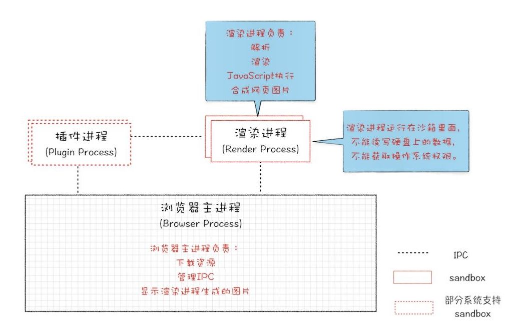
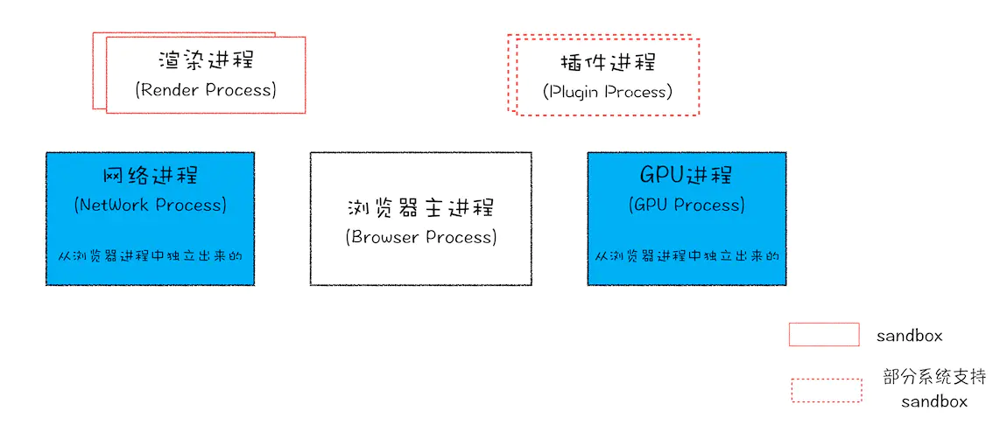
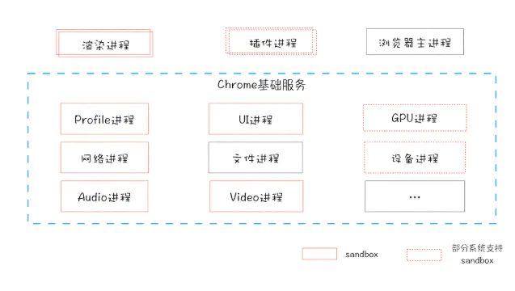
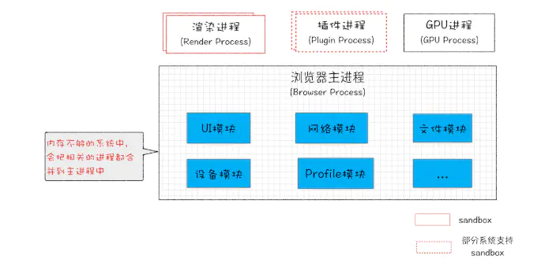
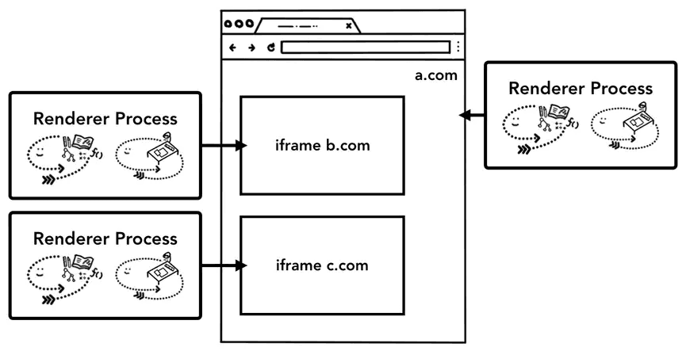

重点解析chorme浏览器原理及其架构演变，解析浏览器内核渲染进程。
单进程浏览器
单进程浏览器是指浏览器所以模块都运行再同一个进程里，这些模块包含了网络、插件、JavaScript 运行环境、渲染引擎和页面等。
2007年之前，所有的浏览器都是单进程的，e.g. IE6。IE6时代，浏览器是单进程的，所有页面也都是运行在一个主线程中的，当时IE6就是这样设计，而且当时的IE6是单标签，也就是说一个页面一个窗口。
页面的所有的功能模块都运行在同一个进程里，这个模块包括但不限于：网络、渲染引擎、JavaScript运行环境、第三方插件等。
单进程的浏览器存在的问题：
- 不稳定：早期的浏览器都是通过插件来实现视频、游戏等功能，插件、渲染引擎等都运行在浏览器进程之中，一个意外崩溃就会导致整个浏览器的奔溃。
- 不流畅：因为所有页面的功能模块都运行在同一个线程之中，因此同一时刻只有一个模块可以执行，这就很有可能出现一个模块发生阻塞的时候而导致其他模块无法运行的情况。
- 不安全：不安全主要是处于两个方面的，一个是插件一个是页面脚本。页面中运行的插件可以读取电脑的资源，执行一些命令。而页面脚本则可以通过浏览器漏洞来获取系统权限，从而应发一系列安全问题。
过渡阶段的发展
背景：国产浏览器都采用多标签的形式，其中的一个标签页面的卡顿都会影响到整个浏览器。
因为卡顿，国内浏览器就开始尝试支持页面多线程，也就是让部分页面运行在单独的线程之中，意味着每个线程拥有单独的JavaScript执行环境，和Cookie环境。
问题就来了：比如A站点页面登陆一个网站，保存了一些Cookie数据到磁盘上，再在当前线程环境中保存部分Session数据，由于Session是不需要保存到硬盘上的，所以Session只会保存在当前的线程环境中。这时候再打开另外一个A站点的页面，假设这个页面在另外一个线程中里面，那么它首先读取硬盘上的Cookie信息，但是，由于Session信息是保存在另外一个线程里面的，无法直接读取，这样就要实现一个Session同步的问题。
后来，Session问题解决了，但是假死的问题依然有，因为进程内使用了一个窗口，这个窗口是依附到浏览器主窗口之上的，所以他们公用一套消息循环机制，如果一个窗口卡死了，整个浏览器也会卡死。 国产浏览器又出了一招，就是把页面做成一个单独的弹窗，如果这个页面卡死了，就把这个弹窗给隐藏掉。
！！！为什么Chrome中的一个页面假死不会影响到主窗口呢？
这是因为chrome输出实际上是图片，然后浏览器端把图片贴到自己的窗口上去，在Chrome的渲染进程内，并没有一个渲染窗口，输出的只是图片，如果卡住了，顶多图片不更新了。
多进程浏览器
随着 Chrome 浏览器的发布，浏览器架构终于来到了多进程的时代。 其中 Chrome 浏览器的进程架构如下：


Chrome架构包括：1 个浏览器（Browser）主进程、1 个 GPU 进程、1 个网络进程、多个渲染进程和多个插件进程。作用如下：
Browser进程（浏览器进程）：浏览器的主进程。主要有以下几个作用：负责浏览器页面的显示与页面交互；负责个页面的管理（创建和销毁其他进程）；将 Renderer 进程得到的内存中的 Bitmap ，绘制到用户页面上；网络资源的管理，下载等。
第三方插件进程：主要负责插件的运行，每种类型的插件都对应着一个进程，只有当使用该插件时才会创建该进程，这样就做到了隔离插件的效果，保证插件的崩溃不会影响到浏览器以及页面。
GPU进程：为了实现 3D CSS 的效果，GPU进程成为了浏览器的普遍需求，因此Chrome浏览器也在其多进程的架构上引入了GPU进程。
浏览器渲染进程，也就是浏览器内核，Renderer进程，内部是多线程的：默认每个Tab页面都是一个进程，互相不影响。主要作用是页面渲染，脚本执行，事件处理等。
网络进程：主要负责页面的网络资源的加载，之前是作为一个模块运行在浏览器进程中的，最近几年才独立出来，作为一个单独的进程存在。
PS：图解Chrome架构
PS：Chrome底层原理
单进程浏览器遗留问题的解决：
- 不稳定：由于进程是相互隔离的，所以当一个页面或者插件崩溃 时，影响到的仅仅是当前的页面进程或者插件进程，并不会影响到浏览器和其他页面，这就完美地解决了页面或者插件的崩溃会导致整个浏览器崩溃。
- 不流畅：在多进程的架构下，JavaScript 只是运行在自己的渲染进程中的，因此即使 JavaScript 代码阻塞了渲染进程，受到影响的也只是当前所渲染的页面，脚本运行也是同样的道理。而对于常常引发性能问题的内存泄漏，在这种架构下，关闭一个页面，会将整个渲染进程给关闭，这时候操作系统就会回收这个进程所占用的内存，也就会不会存在内存泄漏的问题了。
- 不安全：多进程架构的可以使用安全沙箱，你可以把沙箱看成是操作系统给进程上了一把锁，沙箱里面的程序可以运行， 但是不能在你的硬盘上写入任何数据，也不能在敏感位置读取任何数据（文档、桌面）。沙箱里面，即使在渲染进程或者插件进程里面执行了恶意程序，恶意程序也无法突破沙箱去获取系统权限。
多进程的浏览器存在着一些问题：
- 资源占用更多了
- 更为复杂的体系结构
SOA架构
服务化：在2016年Chrome官方团队使用面向服务的架构的思想设计了新的Chrome架构，也就是说Chrome整体架构会朝向现代操作系统所采用的面向服务的架构方向发展，原来的各种模块都会被重构成独立的服务，每个服务都可以在独立的进程中运行，访问服务必须使用定义好的接口，通过IPC来通信 ，从而构建一个更内聚、松耦合、易于维护和扩展的系统，更好实现chrome简单稳定，高速安全的目标 。
Chrome最终要把UI、数据库、文件、设备、网络等模块重构为基础服务，类似操作系统底层服务。

弹性架构：将浏览器程序的每个部分，作为一项服务运行，然后根据情况而定，来将其拆分为不同的流程或汇总为同一个流程，是个资源的动态调配整合。 e.g. 若浏览器在高性能电脑上运行时，可能会将每个服务拆分为不同的进程，从而提供更高的稳定性。但如果不具备此条件，设备资源受到约束，多个服务就可能会被整合到一个进程当中，从而节省内存占用。

总结： PS：单进程与多进程优缺点
问题小结
为什么单进程浏览器当时没有采用安全沙箱？
因为一个进程使用了安全沙箱后，该进程的系统权限受限，在单进程浏览器中，这将会影响主进程的权限。
打开Chrome浏览器一个Tab页面，至少会出现几个进程？
根据目前的Chrome架构:1 个浏览器（Browser）主进程、1 个 GPU 进程、1 个网络（NetWork）进程、多个渲染进程和多个插件进程；
页面中有iframe的话，跨站点 iframe 在单个渲染器进程中运行（站点隔离），并在不同站点之间共享内存空间。

有插件的话，插件也会开启进程
多个页面属于同一站点，并且从a打开b页面，会共用一个渲染进程
装了扩展的话，扩展也会占用进程
所以打开 1 个页面至少需要3~4个进程：1 个浏览器(Browser)主进程、1 个 GPU 进程以及 1 个渲染进程，如果打开的页面有运行插件的话，还需要再加上 1 个插件进程。
这些进程都可以通过Chrome任务管理器来查看
多进程架构，还是会碰到单页面卡死的最终崩溃导致所有页面崩溃的情况？
Chrome的默认策略是，每个标签对应一个渲染进程。但是如果从一个页面打开了新页面，而新页面和当前页面属于同一站点时，那么新页面会复用父页面的渲染进程。那么同一个站点的其中一个页面崩溃了，那么其他页面也会跟着一起崩溃。